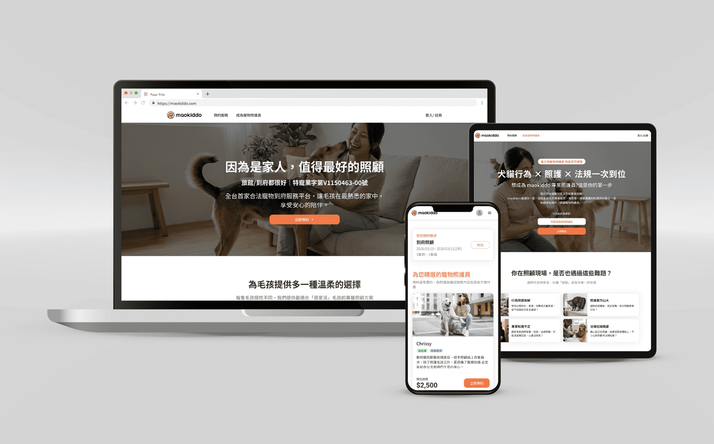
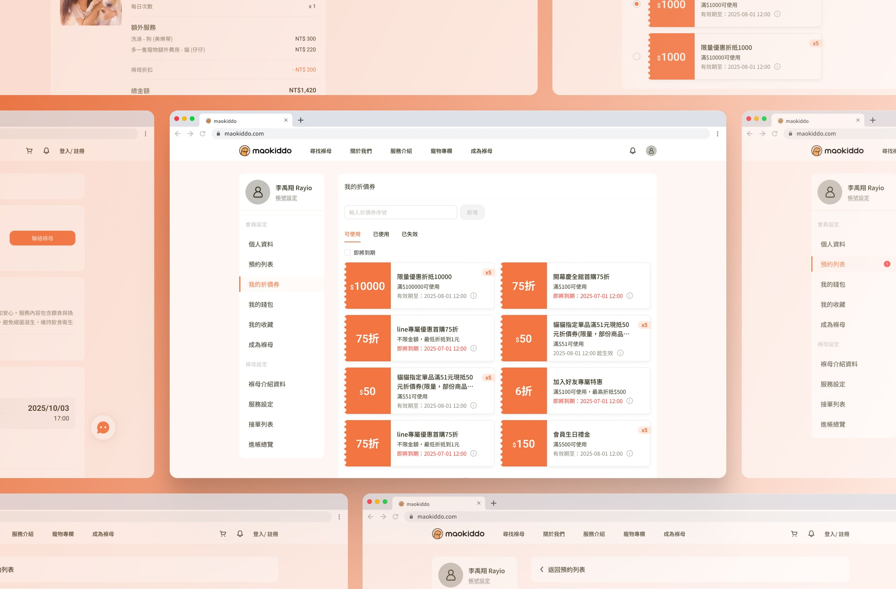
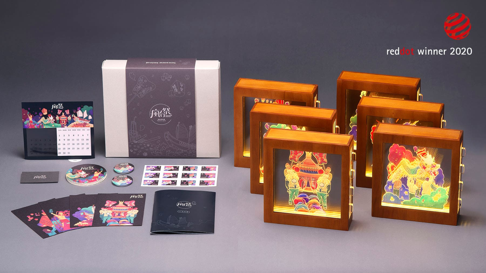

PM + UI/UX

maokiddo 2.0
技術債困境下的重建型專案。以 PM + UI/UX 雙角色，3 個月內從 0 到 1 打造寵物照護平台 MVP，將地圖搜尋改為條件式配對預約，上線一個月會員數突破千人。
查看案例
PM + UI/UX

maokiddo 折價券系統
為只有點數機制的電商平台，從 0 到 1 補上折價券這個最基本的行銷槓桿。從後台規則引擎到前台結帳整合一手規劃設計，上線後持續以數據檢視成效與落差。
查看案例
Brand Identity & Character Design

maokiddo 品牌識別與角色設計
在產品工作之外，一手包辦品牌識別系統——從品牌故事、名片與制服設計，到吉祥物「旺奇」與「奇咪」的角色設定與 AI 生圖 pipeline，產出印刷成品用於名片、制服與線下展場物料。
查看案例
UI/UX Design

松果購物 · 國際直購服務
在既有電商平台上從零建立海外商品服務，重新規劃購物流程、建立獨立視覺語言，並設計 EZway 報關溝通策略，降低跨境購物的認知門檻與棄單率。
查看案例
PM + UI/UX

毛孩星球 · 守護星測驗
將「星象學 × 寵物健康」的品牌定位轉化為互動分眾行銷漏斗。獨立完成策略企劃、IP 設計與前端開發，約一周上線，並成為實體展場的互動推廣素材。
查看案例
PM × Vibe Coding

WorkEnergy
以 PM 身份定義、獨立開發並上線的全端 Side Project。讓知識工作者每天花 2 分鐘記錄，把模糊的疲勞感轉成看得懂的耗能模式——約 2 天從 0 到上線。
查看案例
Visual Design

瘋台祭 Taiwanese Festival
將六個台灣傳統祭典化為多層壓克力燈箱與禮盒設計，用插畫與工藝讓在地文化走入日常，讓外國人看見更立體的台灣。獲兩項 Red Dot Award 肯定。
查看案例